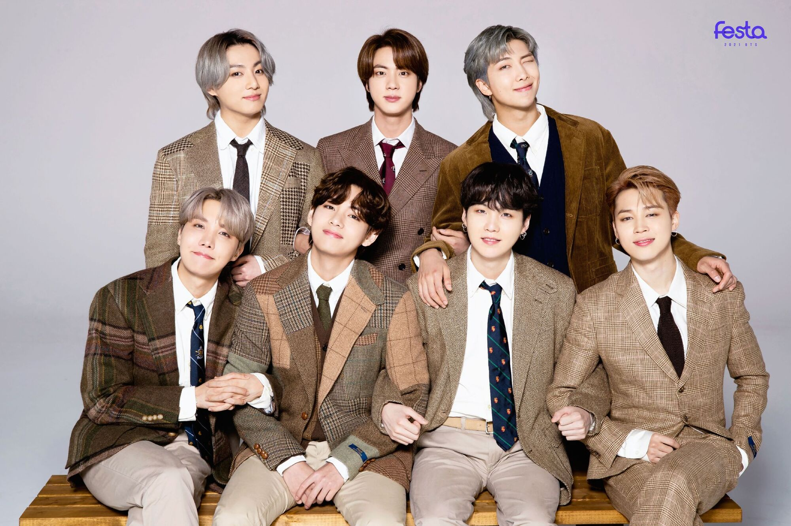
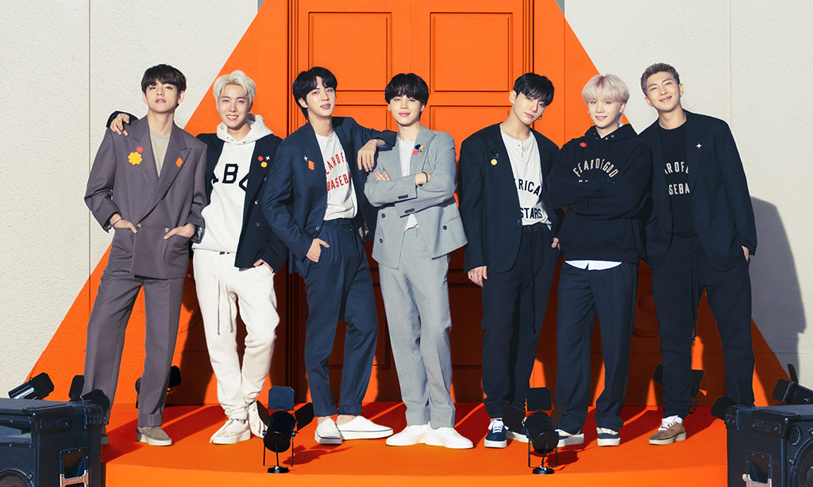

|  | |
 |
RM is BTS's fearless leader, he is the fourth oldest and one of the three of their rappers. He was born on September 12, 1994 (age 27 years), in Yeoui-dong, Seoul, South Korea. RM's stage name used to be Rap Monster but he grew to dislike it and shortened it to RM. His Full name is Kim Namjoon. He has written many of BTS's songs and has a couple of his own songs and albulms.
Jin is the oldest member, and he is another vocalist among the other four. He was hired as their visuals was born on December 4, 1992 (age 28 years), Gwacheon-si, South Korea. His stage name is just abbreviation of his full name Kim Seokjin. He's known in the army for his windshieldwhiper laugh, and being at heart the youngest.
Suga is their main rapper and second oldest. He always has a sleepy, grumpy, and shy demeanor. But sometimes his warm bright personality will show. Suga writes at least 300 songs per year and recently came out with a alblum of his own. His solo albums was listed with Agust D which is TD at the end, that stands for his home town and if you switch the rest of his name backwards you get Suga a gesture to BTS. He was born on March 9, 1993 (age 28 years), Taejeon-dong. His full name is Min Yoongi and some armies call him Yoongi.
J-hope is the fourth rapper in BTS, he was orignally meant to be a vocalist but when they found V they figuered that he should be a rapper because it would be very uneven to have 2 rappers and 5 vocalists. they hired J-hope for his proffesional dancing, he was a break dancer on the streets before he went to a bighit audition. He also writes a bunch of the BTS songs along with Suga and RM, and and produced hope world (his single album). He is known as BTS's "sunshine" and he is always laughing and smiling. J-hope's full name is Jung Hoseok and some call him Hobi. He was born on February 18, 1994 (age 27 years), Ilgok-dong, Gwangju, South Korea.
Jimin is the second oldest vocalists and the third youngest in the group. He has an angelic voice and is another one of the better dancers in the group. He was the top of his class in his contemporary school. he was born on October 13, 1995 (age 25 years), Geumsa-dong, Busan, South Korea. He is always expressing his love for army in various ways and he as well has a couple singles though not as much as some of the rappers.
V is the second youngest. He is another one of the vocalists, and has a deep voice that can also range up to very high. Growing up he was very poor, he often had to choose between having dinner or getting a bus ride home. The only reason he got into BTS was because he went with his friend to his audition. While he was there they suggested he try out, when they heard his velvety voice he was immediatly hired and put into training. V's full name is Kim Taehyung, and some call him tae tae. He was born on December 30, 1995 (age 25 years), Bisan-dong.
Jungkook is the youngest, and some call him the Golden Maknae, maknae means youngest in korean and golden indicating that he's good at almost everything, you might also hear him as kookie or JK. He's BTS's main vocalist and at a very young age was taken away from his home to start training. BTS went to both his high school and middle school graduations. he was born on September 1, 1997 (age 24 years), Mandeok-dong, Busan, South Korea. And he has broken Charli D'amleio's record of most hashtags with his name. He was hired for his stead voice that has amazing range and it's own jungkook twist on it. Some armies say that though he has a beautiful voice while being recorded his voice is almost impossibly angelic. He as well has a couple singles that he wrote but not a huge amount like some of the other members.